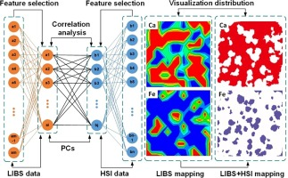

1. AI-Driven Molecular Property Predictor (Cheminformatics)
*Objective: Built a machine learning model to predict the binding affinity of small molecules to a target protein, reducing simulation time by 80%.
*Technologies: Python, RDKit, Scikit-learn, SMILES data.
*Role: Developed pipeline to process chemical structures, feature engineering, and model training.
*Outcome: Achieved a 92% accuracy rate compared to traditional docking simulations

2. Automated Molecular Dynamics Simulation Script
*Objective: Automated the setup and execution of GROMACS simulation workflows for protein-ligand complexes.
*Technologies: Python, Bash, GROMACS.
*Role: Developed scripts for system preparation, minimization, and analysis.
*Impact: Reduced manual setup time from hours to minutes, enabling rapid screening.

3. Spectroscopy Data Analyzer & Visualizer
*Objective: Created a web-based app to analyze and compare NMR spectrum data automatically.
*Technologies: Python, Flask, Matplotlib, SQL.
*Outcome: Provided a user-friendly dashboard for lab members to visualize experimental results.
